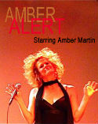
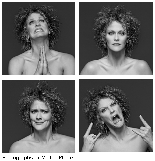

past performanceAmber Alert! Starring Amber Martin |
That's right! Each show will be a different theme, written, choreographed and spun out by Amber Martin, whom The New Yorker proclaimed 'One of the best performers of 2010'. Amber will be joined onstage with an array of her very good friends and special guest stars... performing a dizzying blend of her favorite songs, dancing, interactive videos and special live skype surprises from Portland Oregon's House Of Cunt Performance Group! Even a piece or 2 performed with her mother from Texas! Sure to scramble your mind and warm your heart! See all 4 shows! Watch videos of Amber Martin live onstage. Facebook | Twitter @ambymartin |
|  |
Part 1 - Welcome To My Toybox Part 2 - The Duet Show Part 3 - The Electrick Ned And Company Part 4 - Truckstops and Honky Tonks |
upcoming performances |
|||
 |
|||
| EVQ Film Festival 2018 August 20-25 |
|||
performance archives |
|||
| 2018 | 2017 | 2016 | 2015 |
| 2014 | 2013 | 2012 | 2011 |
| 2010 | 2009 | 2008 | 2007 |